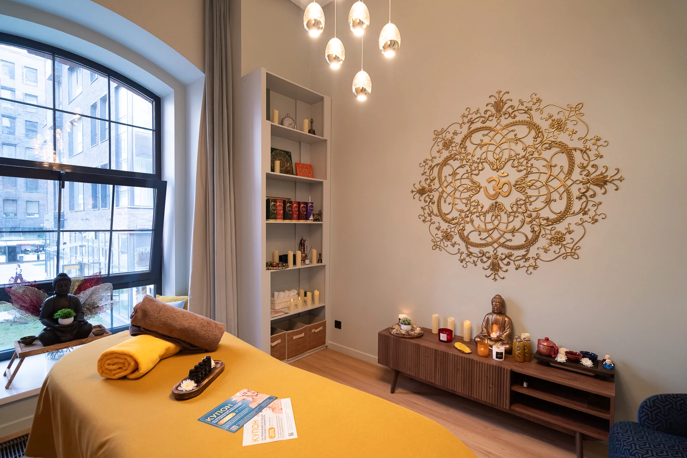
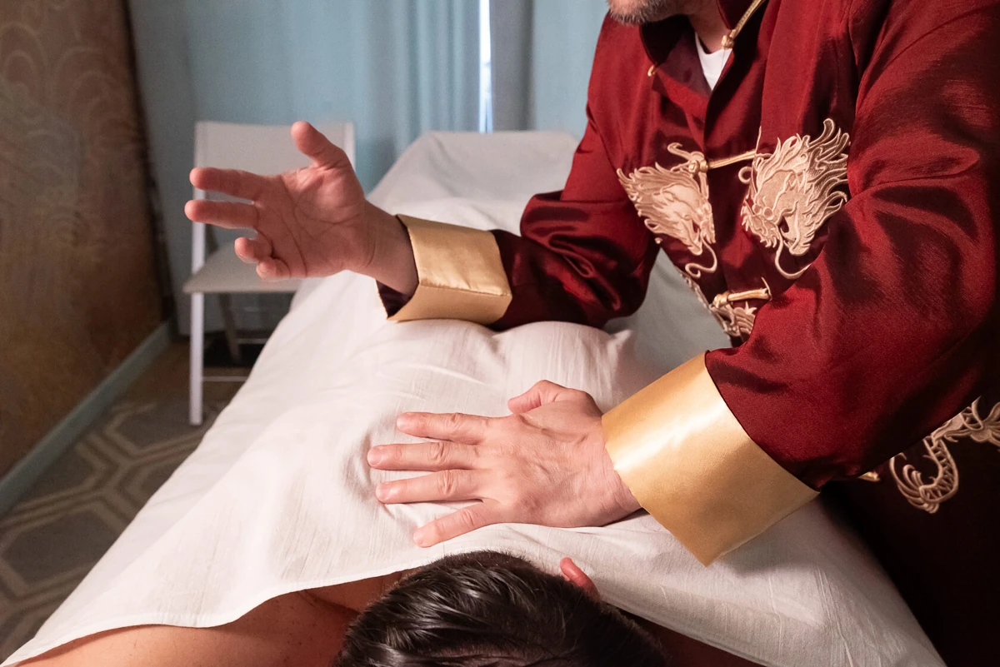
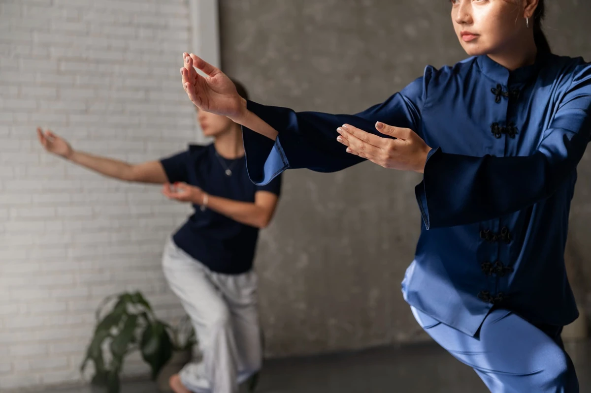
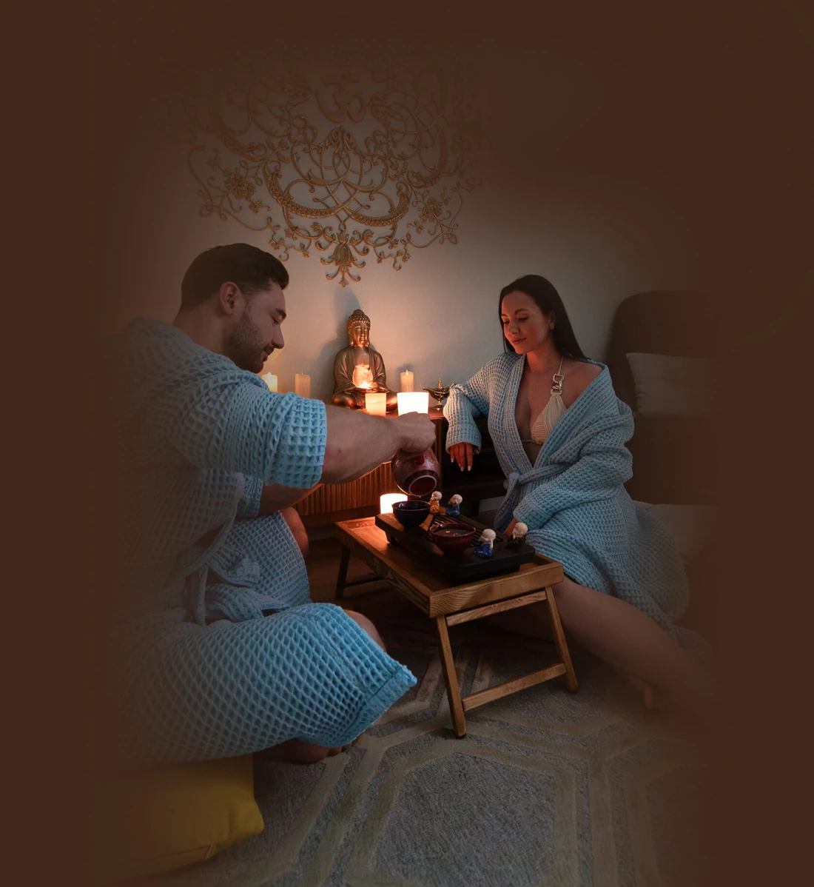

Выдох.
Место для паузы
между вашими большими делами
Каждый день
с 10:00 до 22:00
Большая Почтовая, 34с6
Почувствуйте,
что нужно вам.
Работа с телом, внимание к себе или спокойное движение. Выберите, с чего начнётся ваш визит.

Энергия
дракона
12 000 ₽
Практика через ткань, которую проводит мастер Равиль Садыкбаев. Завершается травяным чаем и личными рекомендациями.
Что входит в программу
- Знакомство с вашим запросом
- Телесная практика через простынь
- Чай после сеанса
Эйфория
16 000 ₽
Время для ухода за собой: телесные практики и забота о лице. Подробный состав и продолжительность администратор уточнит до записи.
Как выбрать эту программу
Расскажите администратору, какой уход вам интересен. Он поможет уточнить состав программы и подобрать мастера.

Сила ветра
5 000 ₽
Плавные движения, дыхание и внимание к своим ощущениям. Занятие проходит с мастером, в спокойном индивидуальном темпе.
О занятии
Сочетание двигательных и дыхательных упражнений. Детали занятия и подходящую одежду можно уточнить при записи.
Вы уже
в другом ритме.
Большие окна, мягкий свет и личное внимание. Внутри города есть место, где можно никуда не торопиться.
У нас есть душ, чистые полотенца и халаты.
Возьмите с собой только время.

Оставайтесь
на чай.
У хорошего визита должно
быть спокойное послевкусие.
Не нужно сразу возвращаться к сообщениям и делам. После сеанса китайского спа-массажа вас ждёт травяной чай.
Вернуться к ритуаламОльга Дандар
Основательница DandarCenter
За пространством
стоит человек.
Ольга объединяет в своих проектах телесные практики, медитации и работу с вниманием. DandarCenter продолжает этот личный интерес к заботе о себе.
Больше об основательницеВнимательные руки.
Ваши мастера.
Подарить
время для себя.
Сертификат на любую процедуру.
В электронном или печатном формате.
Ваша пауза
начинается здесь.
Выберите программу и удобный день. Администратор поможет с деталями и подтвердит свободное время.
В гостях у DandarCenter
Москва, Большая Почтовая, 34с6БЦ «Резиденция архитекторов»
2 этаж, офис 9
Метро «Электрозаводская»
Ежедневно, 10:00–22:00
Проложить маршрутПеред визитом
Что нужно взять с собой?
Полотенца, халаты и одноразовые принадлежности есть в центре. Одежду для индивидуальных занятий можно уточнить у администратора.
Можно ли принять душ в центре?
Да. Если планируете воспользоваться душем до процедуры, в центре рекомендуют прийти за полчаса до записи.
Как понять, какая программа мне подойдёт?
Начните с разговора с администратором: расскажите, какой формат вам интересен. Состав, стоимость и ограничения выбранной процедуры лучше уточнить до визита.
Нужна ли предварительная запись?
Да. Напишите или позвоните в центр, особенно если выбираете вечернее время или выходной. Свободное время подтвердит администратор.